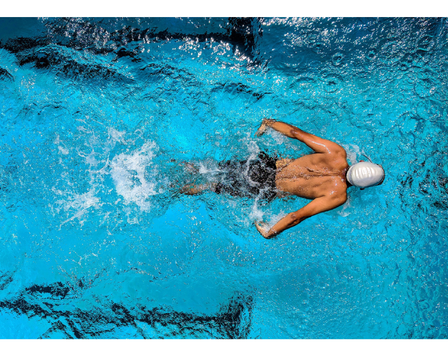

A modalidade mais completas no universo de atividades físicas, a natação é uma forma divertida,
saudável e desafiadora de se exercitar por ser praticada na água, despertando uma sensação de
prazer e bem-estar. A modalidade trabalha diversos músculos do corpo trazendo uma série de
benefícios para a saúde do aluno, desde o relaxamento do corpo, definição muscular, queima de
calorias ao aumento da qualidade de vida. Além disso, a umidade ajuda a dilatar as vias respiratórias
melhorando o seu aparelho respiratório, auxilia no ganho de massa muscular das pernas, braços, a
região do core e o abdômen e não contém contraindicações.
Desenvolve a musculatura, ajuda a emagrecer, desenvolve a capacidade cardiorrespiratória, favorece a memória
e a concentração, reduz o estresse e a ansiedade. Proporciona uma maior qualidade de vida e bem-estar em
seus praticantes.

Se você está pensando em se inscrever em uma turma de Muay thai, Saiba que os principais
benefícios do Muay Thai não estão ligados somente aos aspectos físicos, é sim uma atividade com
alto gasto calórico, começando no seu aquecimento, corrida, polichinelos, saltos, alongamentos,
flexões, abdominais e agachamentos que acelera o seu metabolismo e permite queimar muito mais
calorias, construindo músculos fortes, definindo o corpo e a musculatura ajudando a manter a forma.
Além de ser uma atividade que pode ser praticada por qualquer pessoa, indiferente ao sexo, idade,
biotipos e condicionamento físico. Seus alunos aprendem técnicas de defesa pessoal e alcança
benefícios também para a sua saúde.
O Muay thai ensina e estimula a disciplina, fundamental para todas as áreas da vida, coragem e determinação
em diversas situações cotidianas, auto confiança, força. Além do ganho de massa magra, flexibilidade,
coordenação motora, agilidade mental, respeito ao próximo, alivio do estresse, equilíbrio, bem-estar e qualidade
de vida.
.png)
Diferentemente do que muitos pensam, o treinamento de boxe não é violento e tem ganhado muitos
adeptos entre homens e mulheres em todas as academias, por ser uma aula que proporciona uma
excelente atividade aeróbica e trabalha diversos grupos musculares, essa combinação na
contribuição cardiorrespiratória com os ensinamentos de autodefesa, fez a procura por essa atividade
aumentar ainda mais, pois aumenta o gasto calórico, eliminado as indesejadas gordurinhas,
ganhando massa magra e tonificando os músculos. Além disso seus praticantes aprendem
excelentes técnicas de alto defesa.
A prática garante que os alunos evoluam e tenham melhor consciência corporal para conciliar defesa e ataque,
aumenta o controle de estímulos e reflexos pode ser exercitado e aprimorado com todo o desenvolvimento físico,
melhora a função cardiorrespiratória com queima calórica e estímulo extra para o funcionamento metabólico, o
que por sua vez, assegura ao aluno um emagrecimento saudável e uma redução das medidas podendo chegar até
1.000 calorias durante uma aula de boxe, dependendo do metabolismo de cada praticante.
.png)
Baseado em repetições com cargas em aparelhos novos e modernos, ajuda a construir músculos definidos
e tonificados, com o aumento do gasto calórico durante o exercício acelerando o metabolismo, proporciona
o ganho de massa magra, fazendo com que o corpo funcione de maneira mais eficiente para construção de um
corpo saudável, músculos fortes e definidos, barrando também o processo da perda muscular. A pratica regular
da musculação também combate o acúmulo de gordura, o que ajuda a manter os resultados alcançados,
deixando o praticante com a aparência mais jovem.
A pratica regular acelera o metabolismo deixando o corpo mais jovem tanto em homens como mulheres.
Aumenta a perda de gordura criando músculos fortes e definidos. Também protege os ossos, trabalha
grandes grupos musculares, melhorando o funcionamento do coração e o organismo de doenças
cardiovasculares. Aumenta a flexibilidade, alivia o estresse combatendo a fadiga, contribuindo para
uma maior qualidade de vida e sensação de bem-estar.
.png)

Conhecido como o “detonador de calorias”, o spinning ou Bike Indoor é uma das aulas mais disputadas
das academias. E não é por menos. Essa atividade tem um alto gasto calórico, queima as indesejadas
gordurinhas, fortalece os músculos e, de quebra, aumenta a resistência cardiovascular, respiratória,
ganhando massa magra, saúde, condicionamento físico e definindo a musculatura de seus praticantes.
O gasto energético varia de 500 a 700 calorias por hora, dependendo da intensidade da aula e do
condicionamento físico do aluno. O emagrecimento é realmente o grande benefício que este exercício
proporciona. Mas tem melhorias também na saúde de seus praticantes como ativação e melhoria
cardiorrespiratória, fortalecimento dos membros inferiores (pernas e glúteos), abdômen, lombar. A
atividade contribui ainda para a redução do colesterol, da pressão arterial e ajuda no controle da
diabetes.
.png)
Uma das características principais do Jiu-Jitsu é que não importa o tamanho do seu adversário, com a
técnica correta você vai conseguir vencê-lo. Isso pode ser aplicado no cotidiano de quem pratica o esporte,
no trabalho, no dia a dia, em especial por mulheres no aprendizado de uma técnica de defesa pessoal. É
também uma excelente atividade para as crianças, ajuda a combater a obesidade infantil e a timidez e
desenvolve os pequenos para vida. Os seus benefícios são inúmeros para o corpo, para a sua saúde e a sua
mente.
A autoestima cresce e se transforma em motivação para continuar treinando e evoluindo, isso ajuda
também no dia a dia da vida do aluno dentro e fora da academia, que passa a acreditar mais na sua
capacidade de encarar os problemas e dificuldades. O corpo passa a adquirir mais resistência, controle
da ansiedade, diminui problemas cardiorrespiratórios, melhora o sono e faz com que seus alunos, ganhe
força, perca peso e alcance também a definição muscular. A pratica regular dessa atividade traz um
conjunto de benefícios e resultados não só estéticos, mas principalmente na sua saúde, emoções e mente,
aumentando o seu bem-estar, confiança e qualidade de vida.
.png)
O condicionamento físico foi definido como o ato ou o efeito de condicionar o corpo, tornando-o apto
para realização de tarefas motoras específicas, preparo para realizações de esportes, reabilitações,
prevenir lesões e até mesmo para tornar as nossas tarefas do dia a dia mais fáceis, seja no trabalho,
em casa, com filhos, entre outras do dia a dia. Por isso condiconar ou está preparado para realizações
de qualquer atividade, te proporciona segurança, autoconfiança, conforto e aumenta a sua sensação de
bem-estar, o que gera uma vida com mais qualidade. O desenvolvimento promove o equilibro de todas as
capacidades relacionadas à condição física: força, resistência cardiorrespiratória e muscular
e flexibilidade.
Seus benefícios estão relacionados com diversos aspectos, um bom programa de condicionamento físico
ajuda a prevenir o ganho de peso e a mantê-lo em níveis adequados, aumenta o gasto energético e
acelerando o metabolismo, contribuindo para a queima de gordura, ganho de massa magra, músculos fortes,
combatendo a obesidade e melhora também os níveis de aptidão física.
.png)
A pratica da Yoga trabalha a força e o condicionamento físico por meio de sequencias que induzem a
flexibilidade e à consciência corporal, promove o aumentando da concentração pois a movimentação do corpo
é sincronizada com a respiração. É um tipo de atividade que pode ser praticada por pessoas de todas as
idades e, dessa forma, melhora uma série de detalhes em relação ao corpo, mente, sensações e até no campo
emocional do aluno.
Garante uma maior flexibilidade, equilíbrio e fortalecimento corporal, aumentando também a sua disposição
no dia a dia. Alivia o estresse, ansiedade, angústia e até sentimentos negativos, trabalhando o seu
campo emocional. Previne doenças como a depressão e melhora problemas respiratórios e relacionados a
postura física, contribui para o controle da pressão arterial, o fortalecimento do sistema imunológico
e muito mais.